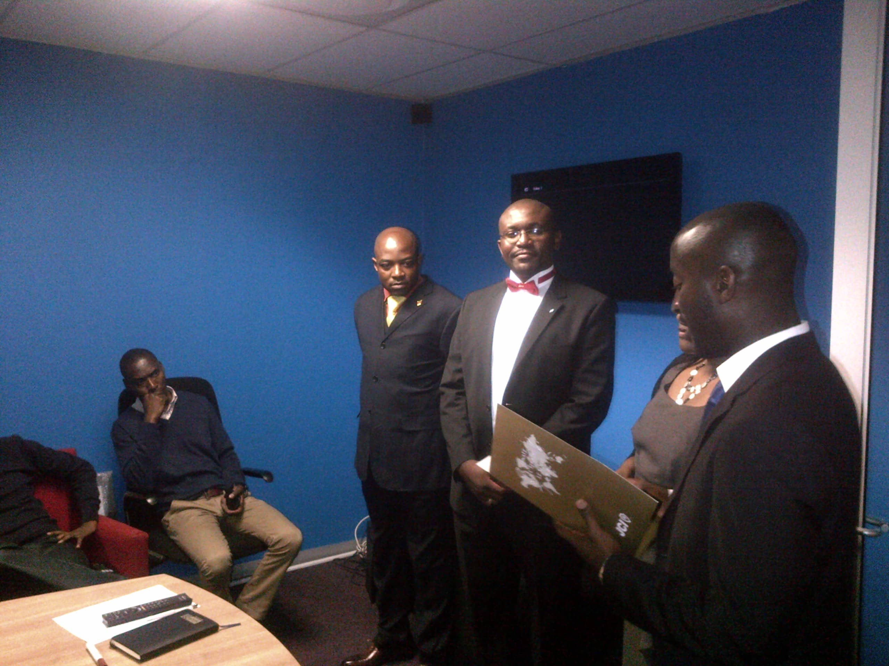

Martins Mbah Njah is an admitted attorney of the High Court of South Africa, a researcher, legal and management consultant. He helps entrepreneurs and companies streamline management procedures, simplify systems for SMMEs, and ensure regulatory compliance. Registered debt counsellor (NCRDC 3244) and Master Tax Practitioner (SAIT).
Former Academic Dean & Executive Director at CIDA City Campus, National VP for JCI South Africa. Registered with LPC (#109384), SAIT Master Tax (#63513758), NCR Debt Counsellor (#3244).

Hover or tap to flip